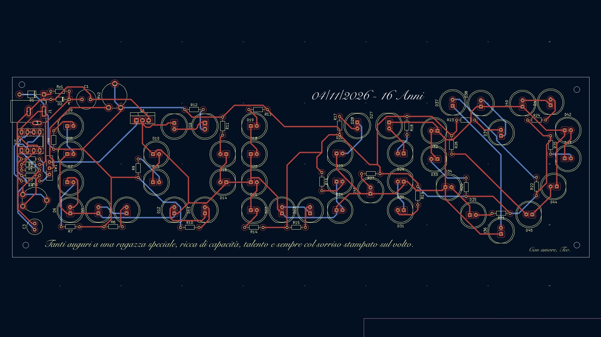

ELECTRONICS

LED Fading Sign
Design and development of an illuminated LED sign featuring a fading light effect. An electronics project focused on circuit design, LED control and hardware implementation.
View project →ELECTRONICS • SOFTWARE • AI
Electronics student passionate about technology, programming and engineering.
Explore my projects Download CVWHO I AM
My passion for technology began in childhood, inspired by my grandfather, a highly skilled electronics designer. Growing up around his work sparked my curiosity about electronics, engineering and how technology turns ideas into reality. Over time, this curiosity evolved into a genuine passion for electronics and programming. Today, I'm a fifth-year electronics student interested in Electronic Engineering, embedded systems, microcontrollers and digital electronics. I've also independently explored software development through C and Python. I'm particularly fascinated by the connection between hardware and software, from Arduino projects and embedded systems to artificial intelligence, computer vision and web development. Through personal projects and continuous experimentation, I aim to expand my technical knowledge, develop practical skills and turn ideas into working solutions. My goal is to keep growing as an engineer and developer, always driven by curiosity and the desire to learn.
My interests include electronics design, embedded systems, programming and also music integration.
WHAT I'VE BUILT
ELECTRONICS

Design and development of an illuminated LED sign featuring a fading light effect. An electronics project focused on circuit design, LED control and hardware implementation.
View project →ARTIFICIAL INTELLIGENCE
An experimental local AI vision system developed with Python and OpenCV, designed to analyse camera frames and interact through voice.
View on GitHub →ELECTRONICS
Electronic and embedded systems projects involving microcontrollers, sensors, circuit design and hardware programming.
View on GitHub →MILESTONES & ACHIEVEMENTS
Best Construction Award
Campionati Nazionali Studenteschi di Robotica · Cattolica · 2026GET IN TOUCH
Interested in technology, engineering or collaborating on a project? Feel free to contact me.